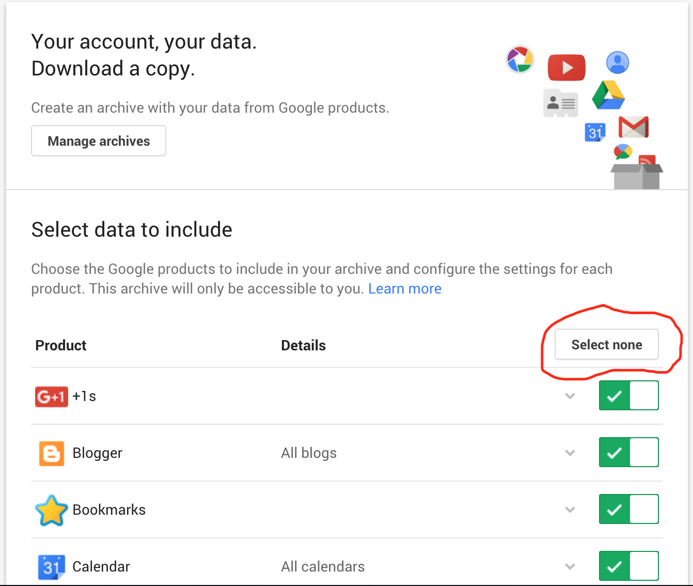
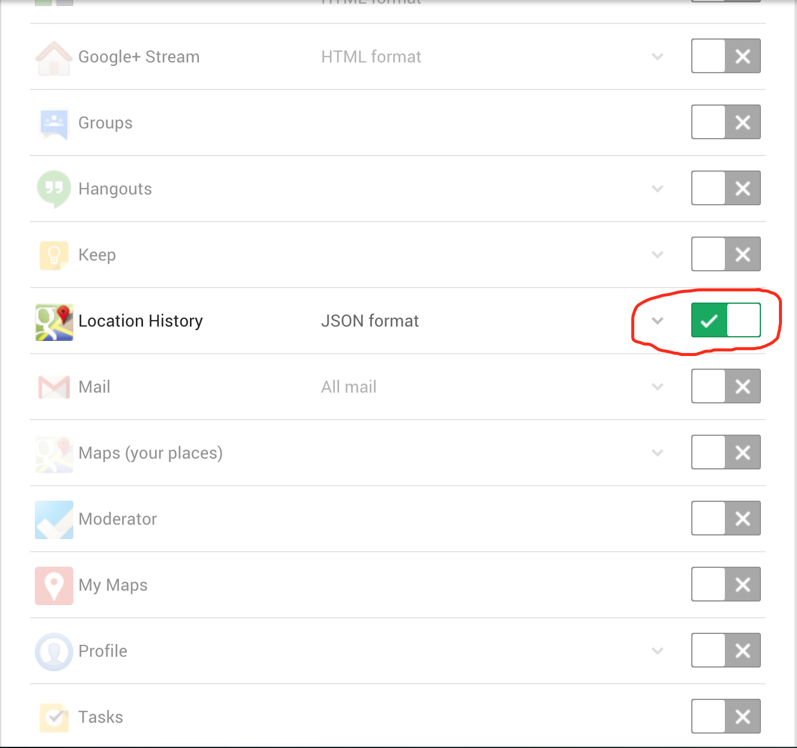
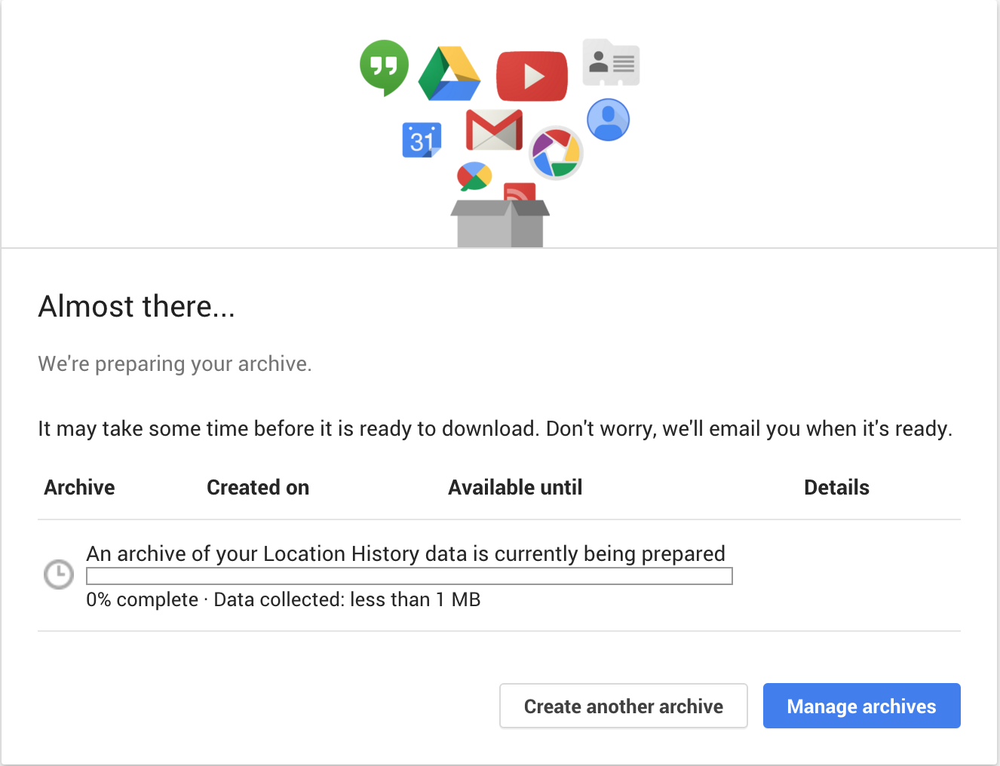
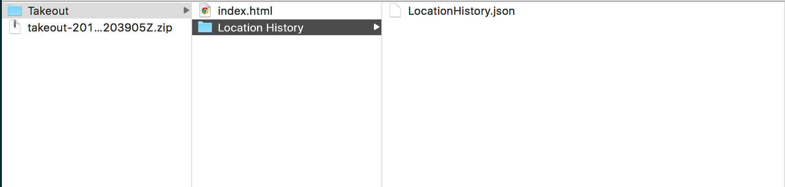

Follow these instructions to download your location history.
-
Go to Google Takeout
-
Select None to uncheck all boxes.

-
Scroll down and check Location History.

-
Click Next
-
As shown below, verify that File type is .zip and Delivery Method is Send download link via email.
-
Click Create archive.

-
When the archive progress bar is complete, Download the data unto your computer.

-
Locate the downloaded .zip file on your computer and unzip it (typically double-clicking). The file is usually a takout-2016**.zip
file unless you rename it.
More details about how to unzip a file.
-
Location the file LocationHistory.json inside Location History folder, which is inside
Takeout folder.Your unzipped directory should have the structure shown below.

-
Upload LocationHistory.json when prompted for file upload in Student LifeMaps.
-
Optional: If you already went through the process of downloading Location History but never saved the data to
your computer, you can always click on Manage archives and then click Download.
-
Continue to Student LifeMaps